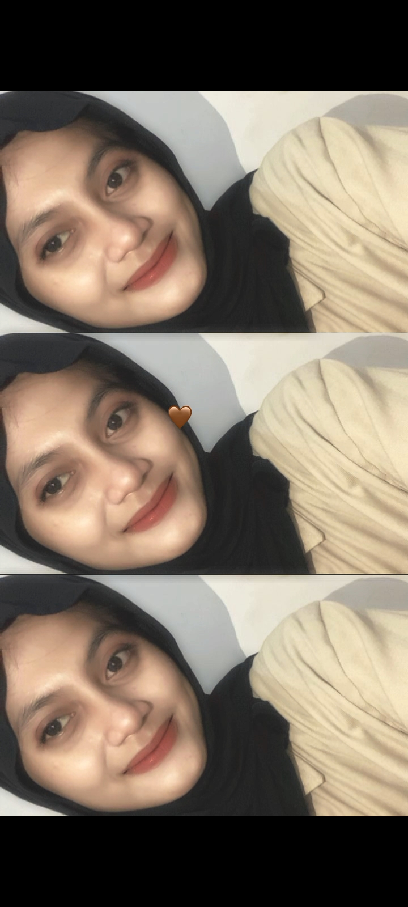

Halo, saya Naya. Saya adalah mahasiswa Informatika yang sedang mempelajari dunia teknologi, pemrograman, dan pengembangan aplikasi.

Identitas pribadi
Teknologi yang sedang saya pelajari
Bahasa pemrograman yang saya pelajari untuk membangun logika dan program.
Dasar pengembangan halaman web menggunakan struktur HTML.
Project yang telah saya kerjakan
Diary Mahasiswa merupakan aplikasi berbasis web yang dibuat untuk membantu mahasiswa mencatat dan mengelola diary atau catatan pribadi secara digital.
Riwayat commit digunakan sebagai bukti proses pengembangan dan kontribusi dalam project Diary Mahasiswa.
Perjalanan pendidikan saya
Program Studi Informatika
Sekolah Menengah Atas
Sekolah Menengah Pertama
Sekolah Dasar
Jangan takut mencoba hal baru. Setiap kesalahan adalah bagian dari proses untuk menjadi lebih baik.